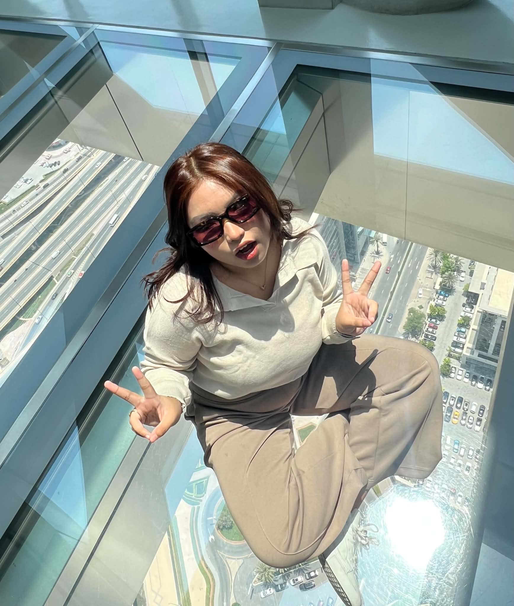

About Me
Hello! I am Rich Dionisio. I am 19 years old and a second year BA Multimedia Studies student. I am also a member of the organization UP Volunteers for Children as a member of the creatives committee. I am a huge foodie and I love trying different foods and cuisines. I enjoy learning new ways to make designing in Adobe easier.
Things I love
- Playing games especially Roblox
- Watching law and mystery series
- Watching different genres of movies
- Designing posters
- Trying new foods
- Loves Middle Eastern Cuisine
- Crocheting
- Finding new website that helps in designing
- Collecting Photobooths
Passion Projects
Learning Adobe Photoshop
March 15, 2026
Learn and master Adobe Photoshop tools and function everyday for five days, summarize the learning of the day by making/editing a poster.
Sea at Sunrise
May 24, 2026
Paint a large watercolor landscape of the beach at sunrise.
Making one poster everyday for a week
August 16, 2026
Make one poster everyday for seven days. Each poster has different genre and focus.